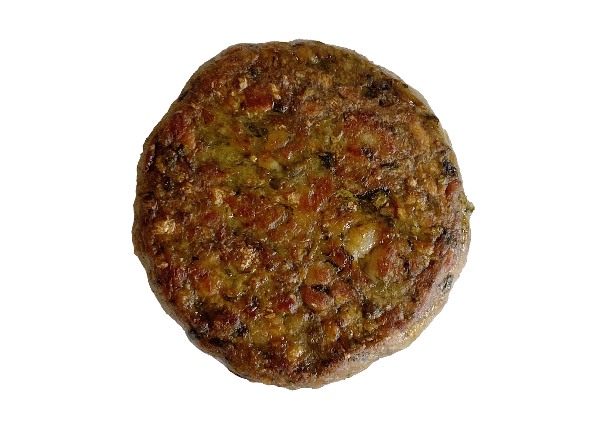
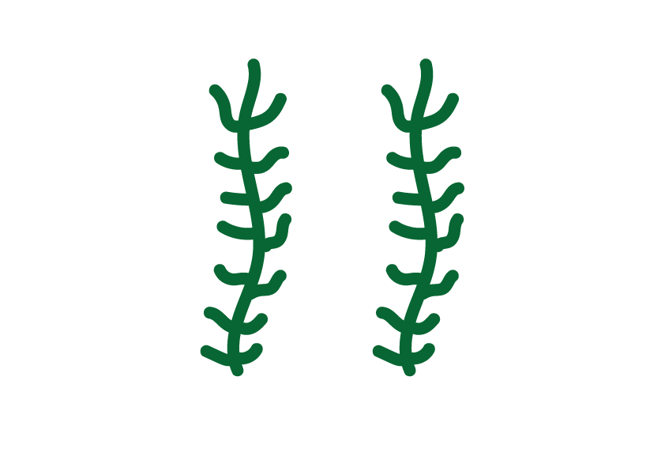

Waarom zeewier?
Zeewier wordt ook wel de 'groente uit de zee' genoemd. Zeewier wordt veel gebruikt in de plantaardige keuken, omdat het veel vitamines, mineralen, omega-3-6-9 vetzuren heeft en veel eiwitten, ijzer en calcium. Daarnaast neemt het geen landbouwgrond in beslag en het verbruikt nauwelijks zoet water.
Oosterschelde
Het zeewier groeit in de Oosterschelde. De Oosterschelde is een zeearm van de Noordzee tussen de Zeeuwse schiereilanden. Het heeft een oppervlakte van 350 km2. Twee keer per dag stroomt er 800 miljard liter zout water het gebied in en uit. Op de Oosterschelde komen heel veel vogels het hele jaar om te eten, rusten en broeden. Onder water komen er veel verschillende zeedieren voor. Onder andere haaien en roggen komen in dit gebied voor. Daarmee is dit uniek in de wereld.
Duurzaam geteeld
Het zeewier wordt met de hand geplukt door Boerderij Zeewaar. Zeewaar is een bedrijf opgericht in 2013. Het is het enige bedrijf in Nederland dat duurzaam zeewier teelt voor consumptie. Dit is heel belangrijk, omdat zeewier een grote functie heeft in de zee. Zeewier filtert onder andere het water, neemt koolstofdioxide op, geeft zuurstof af en beschermt de kust tegen erosie.